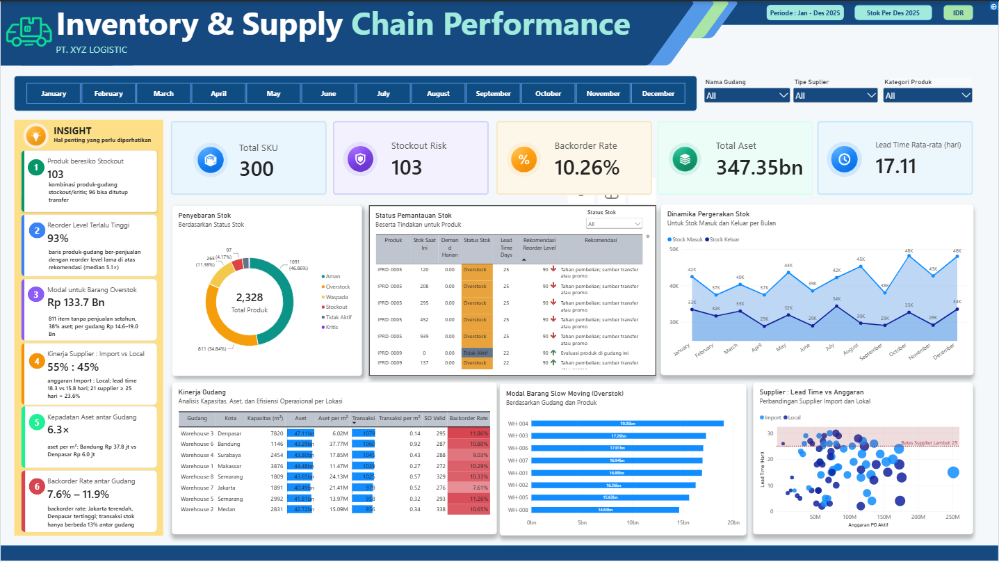

Every dataset tells a story.
Here, I explore data, uncover hidden patterns, and transform what I learn into practical projects.

Maven Fuzzy Store: Sales, Product & Marketing Performance
An end-to-end analysis of an online plush toy store, covering three years of sessions, orders, and refunds. Using MySQL and Power BI, I built two interactive dashboards that reveal where profit comes from, which marketing channels convert best, and where visitors drop off before checkout.

Warehouse Inventory: Inventory & Supply Chain Performance
An inventory analysis for a logistics company managing 300 SKUs across 8 warehouses. Using SQL and Power BI, I identified capital tied up in overstock alongside products at risk of stockout, then explored stock transfers between warehouses and smarter reorder levels as ways to balance the two.
Still Learning, Still Building
These projects are not the finish line. They are checkpoints on a learning journey that is still very much in progress. I am constantly picking up new tools, trying out new techniques, and working on projects that stretch me a little further each time. More dashboards and analyses are on the way, and next up is a look at how I keep growing through self learning.